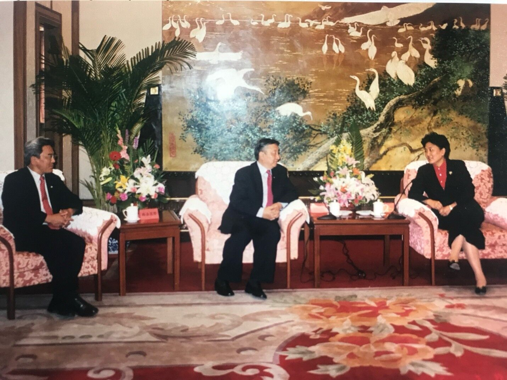

The Dalai Lama’s Reincarnation: Future Dynamics in Sino-Tibetan Conflict and Geo-political Consequences
Kelsang Gyaltsen[1].

Kelsang Gyaltsen[1]
The question surrounding the reincarnation of His Holiness the 14th Dalai Lama is drawing increasingly renewed international interest in and attention to the unresolved Sino-Tibetan conflict. It is a monumental clash between the cultural and spiritual resilience of an ancient nation and the power and will of the Chinese Communist regime—a colonial power intent on erasing the identity of the Tibetan people and transforming Tibet into its own image.
In this context, on 2 July last year, the Dalai Lama issued a landmark decision from his exile headquarter in Dharamsala, North India. He announced that the centuries-old institution of the Dalai Lama will continue and that only the Gaden Phodrang Trust—the enlarged office of the Dalai Lama—holds the legitimate authority to search and determine the recognition of his successor. This declaration further affirms that the procedures of search and recognition should be carried out in accordance with established Tibetan Buddhist traditions. A few months earlier, in a new memoir titled Voice for the Voiceless, the Dalai Lama stated that any search for a successor must take place in the free world so that the successor is able to carry forward the mission started by the predecessor.
This announcement made the Communist regime in Beijing bristle with anger. Beijing rejects the Dalai Lama’s authority to decide on his reincarnation and asserts that Communist China, which has ruled Tibet since its military invasion in 1950, alone holds the right to make the final decision on the recognition of 15th Dalai Lama This sets the stage in this century for the next round of the battle in the epic struggle between the unyielding resistance of the Tibetan people on one hand and the continued subjugation of Tibet by Communist China on the other.
Against this background, the probability that there will be two Dalai Lamas when the current 14th Dalai Lama passes away is exceedingly high: One discovered and recognised in exile by Tibetan Buddhist masters and Tibetans living in free countries in exile in accordance with established Tibetan Buddhist traditions and another appointed and installed by the Communist regime in Beijing in occupied Tibet.
This clash of two different views of spirituality, faith, and religion is monumental. It is a clash with worldwide consequences and repercussions. In essence, it concerns the freedom of religion and the role and place of spirituality, faith, and religion in human societies. Here, the political ambitions of an atheist, totalitarian regime collide with an established, centuries-old spiritual tradition. The relevant questions here are: Can spiritual authority be imposed by decree, and engineered politically? Or does it come from spiritual traditions, heritage, trust, and truth?
These questions do not concern Tibet alone. They have universal implications and consequences. Members of the international community will be challenged to take position on these issues. Beijing’s aggressive diplomacy, backed by economic and political pressures, will come into play once more. The imperative question is: How will members of the international community react and respond to it?
For Tibetans, Beijing’s rigid stand on the issue of reincarnation of the Dalai Lama reflects its intransigent and uncompromising policy toward Tibet. In recent decades, the Dalai Lama has undertaken numerous initiatives and put forward various proposals in hope of reaching a mutual understanding on the issue of Tibet. To this end, his envoys had put forward the Memorandum on Genuine Autonomy to their Chinese counterparts in 2008 in Beijing. This document outlines specific competence areas to ensure that Tibetans could manage their own affairs without challenging the People’s Republic of China’s (PRC) territorial integrity and sovereignty.
I have been one the two envoys of the Dalai Lama with my late colleague, Lodi Gyari. From 2002 to 2010, we had nine rounds of formal discussions and one informal meeting. The meetings took place mostly in Beijing and other places in China. The regime in Beijing rejected all our proposals and initiatives. From my dealings with the Chinese Communist regime, I have come to the conclusion that no amount of Tibetan flexibility or compromise will move the present Chinese Communist leadership to reconsider and change its policies regarding Tibet. The Chinese Communist leadership will never feel secure of their hold on Tibet until Tibet is completely assimilated into the Chinese mainstream. It is clear to me: There is no way we Tibetans can address this paranoia of the Chinese Communist leadership if we remain what we are: Tibetans.
It is now my belief that there will be no improvements in the agonising situation of the Tibetans inside Tibet nor a path through negotiations towards a mutually acceptable solution to the question of Tibet, until and unless there are major and fundamental political changes in China. Bringing about these changes in the PRC must be the strategic objective of the Tibetan freedom movement. In the pursuit of this political objective, we must build a broad international coalition with this cause as a common mission, whose members perceive the present Chinese Communist Party (CCP) regime as a threat to its national security and to international stability and peace.
Beijing’s intransigent position on reincarnation of the Dalai Lama underlines the assumption that it never had the political will to engage in earnest negotiations while he is still alive. The Chinese Communist regime’s approach to the Sino-Tibetan conflict seemed to have been to wait until the Dalai Lama passes away. Obviously, it is their hope that the death of the Dalai Lama will render any compromise on Tibet unnecessary and resolve the issue of Tibet once and for all in Beijing’s favour.
This is a monumental political miscalculation by Beijing. The Dalai Lama is the key to resolving the conflict and is not the source of the problem. He has consistently advocated non-violence, dialogue, compromise, and reconciliation since 1950. There are deep grievances, discontent and resentment among Tibetans in Tibet stemming from Beijing’s misguided policies and not because of the Dalai Lama. Clearly, without a fundamental rethinking and change in Beijing’s policies on Tibet, the conflict will persist even after the 14th Dalai Lama.
In contrast to the hopes of Beijing, the question surrounding the reincarnation of the Dalai Lama is already triggering renewed international interest in and attention to the Sino-Tibetan conflict. For Tibetans, Beijing’s political weaponisation of the Dalai Lama’s reincarnation is not just a violation of their right to choose their religious leaders free of political interference; it is a profound and humiliating assault on their religious values and traditions.
It is true that Tibetan land is occupied and Beijing controls everything in Tibet. But it cannot occupy and control the hearts and minds of her people. Devotion cannot be politically enforced, and spiritual reverence and loyalty cannot be regulated or decreed. The death of the 14th Dalai Lama will mark a turning point in history, and it will be a watershed moment for the people of Tibet and its freedom movement. However, the absence of the 14th Dalai Lama will not remove the causes for Tibetan resistance and freedom movement. What will be absent are his restraining influence and forward-looking and conciliatory approach in finding a peaceful and negotiated resolution to the Sino-Tibetan conflict.
Beijing installing a fake Dalai Lama will be perceived by Tibetans as the ultimate violation and humiliation of their values and traditions. Therefore, in the absence of the unique moral authority of the 14th Dalai Lama, it is possible that this act may represent the last straw, transforming Tibetans’ long standing deep sense of resentment and humiliation into rage and violence. Were this to happen, it would constitute a profound tragedy for the Tibetan people and, more broadly, for the global cause of non-violence. A measure of the depth of resentment of Tibetans inside Tibet is reflected in the number of tragic self-immolation protests in Tibet. In the past 15 years over 160 Tibetans from all walks of life have resorted to this drastic form of protest.
The current Dalai Lama has made clear that his reincarnation will be born in exile in the free world when he is unable to return to Tibet. He has been residing in India since his flight from Tibet in 1959. India also holds the largest Tibetan diaspora. Against this background, the likelihood that the reincarnation of the current Dalai Lama might be found in India is high.
India gave Tibetan refugees not only political asylum but a second home in exile. Today, the Tibetan exile community in India is a vibrant democratic society with a well-functioning cultural, educational, social, and political infrastructure. It is in India where Tibetan culture, religion, and philosophy have been preserved, taught, and projected into the future by educating the next generation. Tibetan civilisation did not only survive in India, but it also adapted and connected to the world.
For Buddhists all over the world and especially for Tibetans it would feel right and authentic if India were the place where the reincarnation of the current Dalai Lama is found. India as the birthplace of Buddhism would make good sense to be the birthplace of the 15th Dalai Lama. India’s karmic connection to Buddha is authentic. The entire Buddhist world would revere India not only as the historic birthplace of Buddhism but as a living Buddhist spiritual centre and the home of the 15th Dalai Lama. India would acquire the role of the custodian of Tibetan Buddhism. This will greatly enhance India’s diplomatic standing and strategic gravity in the international community.
With each passing year, the question of the reincarnation of the current Dalai Lama will attract greater international attention, scrutiny, and importance. As he enters the final phase of his life, His Holiness the 14th Dalai Lama will once again act as a catalyst, thrusting the fate of Tibet and the Tibetan people into the forefront of international attention.
The pertinent question is: How will the international community react when, one day in the future, it is challenged to take a stand on the reincarnation of the Dalai Lama? When called upon, will the members of the international community chose to endorse a successor recognised by Tibetan Buddhist masters and Tibetans living in free countries in accordance with spiritual traditions of their religion, or a contender installed by political engineering by an atheist regime in Beijing with no spiritual authenticity and gravity. If the next Dalai Lama, born in the free world, were endorsed by India, the US, Europe, Australia, Japan— and by Buddhist, Christian and Islamic leaders and communities worldwide in a concerted common effort to defend religious freedom——it would create a global consensus that would completely delegitimise China’s attempt to fake spiritual authority.
Such an outcome would have far-reaching global consequences. It would make clear what counts in spiritual matters: Spiritual authority doesn’t come from force or state control or directive. It comes from freedom, faith, legacy, and truth. Spiritual legitimacy cannot be manufactured through political engineering. Finally, such global solidarity and unity in defence of freedom of religion would be a powerful reminder that, in the long run, spiritual authenticity and truth are not only resilient but destined to prevail.
Footnotes
- My views are not academic but based mainly on personal experience and insight. The are expressed in my private capacity and not in any other capacity.